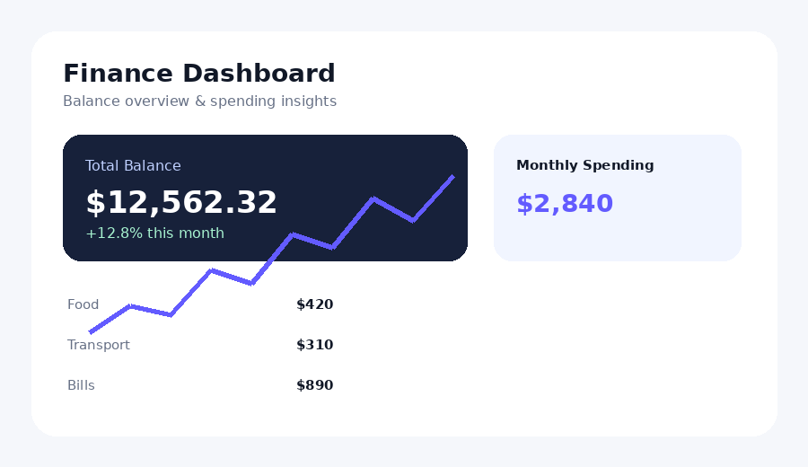
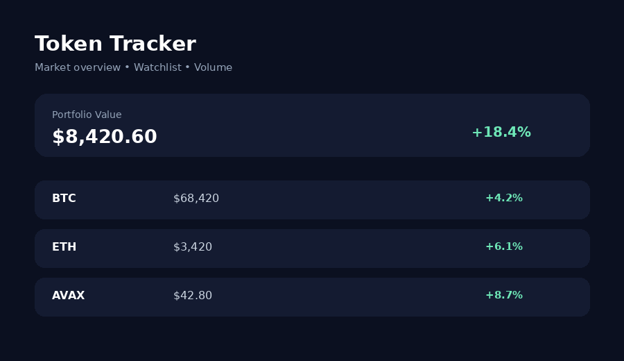
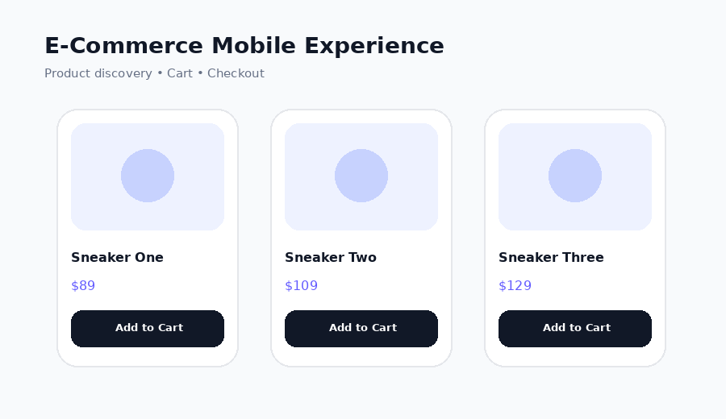

01 / DASHBOARD01
Finance Dashboard
A calm, data-first dashboard for balances, spending insights, and monthly performance.
I'm Wandi Walihudin, an entry-level UI/UX designer with a technical background in Computer & Network Engineering. I turn ideas into clear interfaces, useful flows, and polished product concepts.
Monthly performance +12.8%
Personal concept projects created to demonstrate interface design, hierarchy, interaction thinking, and visual consistency. These are not presented as client work.

01 / DASHBOARDA calm, data-first dashboard for balances, spending insights, and monthly performance.

02 / MARKETA focused dark dashboard for fast scanning of assets, prices, volume, and changes.

03 / MOBILEA straightforward shopping flow built around product discovery and clear primary actions.
Start with hierarchy and user flow, then build a visual system that makes the product easier to understand.
Clarify users, problems, goals, and important information.
Map the flow and organize content into a simple hierarchy.
Build wireframes, components, visual language, and responsive screens.
Review, refine details, and improve consistency.
I studied Computer and Network Engineering and have a foundation in computer skills, basic programming, databases, APIs, online research, and basic web development. I'm now building practical UI/UX capability through personal projects and continuous learning.
Open to junior roles, internships, freelance opportunities, and design collaborations.
Wanzdaxs@gmail.com ↗Subang, West Java, Indonesia · 085863064801